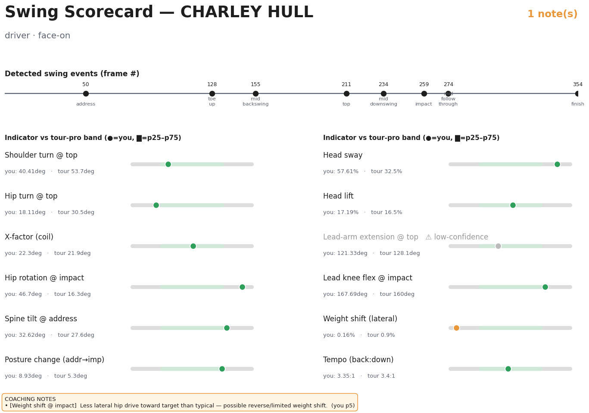
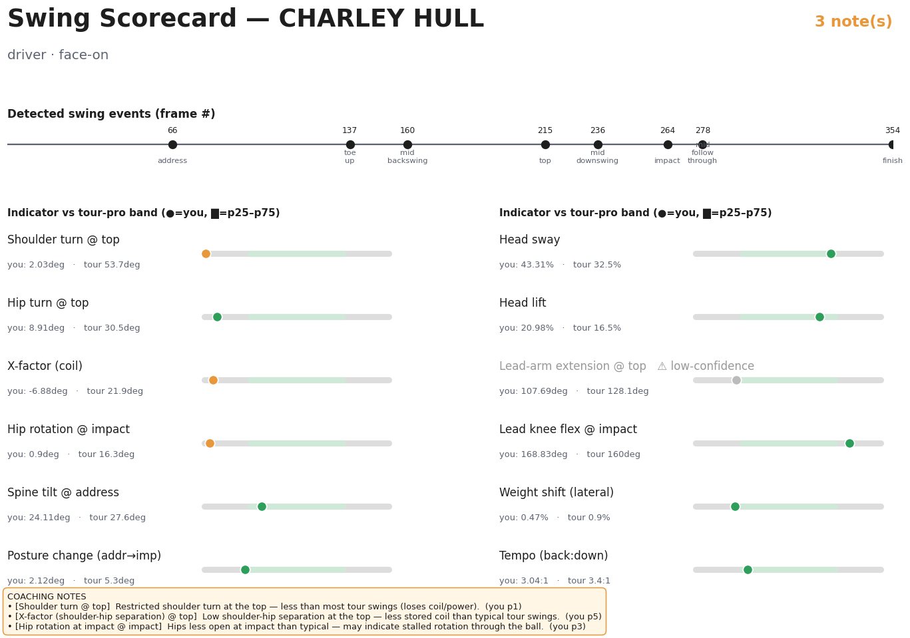

CHARLEY HULL · driver · face-on
Top row: shared inputs (raw + 2D). Bottom row: the 3D divergence — jittery/compressed MotionBERT (red) vs cleaner MixSTE+One-Euro (green).
Per-clip caveat: GolfDB clips have no 3D ground truth, so for this one swing we can't declare either number "correct" — the accuracy claim is the Vicon average (above). Monocular 3D compresses depth-rotation, so absolute turn angles read low for both lifters; the scorecard reads them relative to a pro band built from the same pipeline. Expect the two lifters to disagree most on the depth-dependent rotation metrics.


| Measurement | Baseline (MotionBERT) | Improved (MixSTE+1€) | Δ | Tour median |
|---|---|---|---|---|
| shoulder_turn_top_deg | 40.41 | 2.03 | -38.38 | 53.7 |
| hip_turn_top_deg | 18.11 | 8.91 | -9.20 | 30.5 |
| x_factor_top_deg | 22.3 | -6.88 | -29.18 | 21.9 |
| hip_turn_impact_deg | 46.7 | 0.9 | -45.80 | 16.3 |
| spine_tilt_address_deg | 32.62 | 24.11 | -8.51 | 27.6 |
| spine_tilt_impact_deg | 23.7 | 21.98 | -1.72 | 23.4 |
| posture_loss_deg | 8.93 | 2.12 | -6.81 | 5.3 |
| head_sway_max_pct | 57.61 | 43.31 | -14.30 | 32.5 |
| head_lift_max_pct | 17.19 | 20.98 | +3.79 | 16.5 |
| left_arm_bend_top_deg | 121.33 | 107.69 | -13.64 | 128.1 |
| right_arm_bend_top_deg | 134.68 | 111.78 | -22.90 | 114.1 |
| lead_knee_flex_address_deg | 157.79 | 158.32 | +0.53 | 164.8 |
| lead_knee_flex_impact_deg | 167.69 | 168.83 | +1.14 | 160.0 |
| hip_lateral_shift_pct | 0.16 | 0.47 | +0.31 | 0.9 |
| tempo_ratio | 3.35 | 3.04 | -0.31 | 3.4 |
LLM rewriter is offline in this environment (no API key) — shown below is the structured scorecard feedback that the LLM layer turns into prose. Same input, both tracks.
1 indicator(s) fall outside the typical tour range — see notes below.
3 indicator(s) fall outside the typical tour range — see notes below.
Generated by Scripts/build_compare_panel.py.
Video: Scripts/render_pipeline_compare.py · Scorecards:
Scripts/make_compare_scorecards.py · Accuracy basis:
outputs/coaching_accuracy/FINDINGS.md.